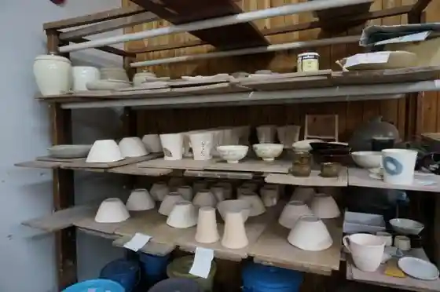
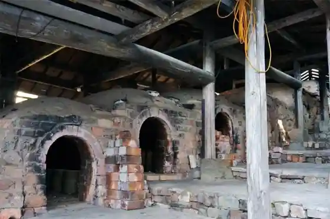
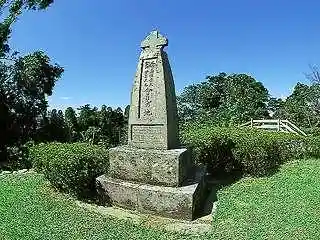
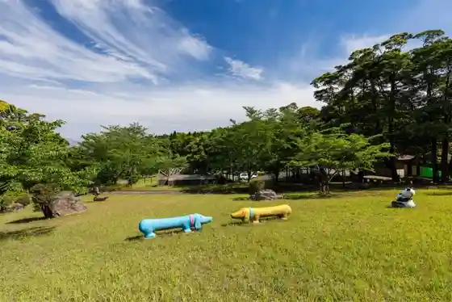

Miyama to Yu Kan
Hioki, Kagoshima · 099-274-5778 · Official / source link

Miyama Chiku (Satsuma Yaki Village)
Hioki, Kagoshima · 099-274-2112 · Official / source link

Yu Yuki Gen'on Senkyo
Hioki, Kagoshima · 099-248-9409 · Official / source link
Taishu Shimazu Takahisa Seishi Zabieru Kaiken no Chi Hi
Hioki, Kagoshima · 099-273-2111 · Official / source link

Ijuin Forest Park
Hioki, Kagoshima · 099-273-9253 · Official / source link

Shiroyama Park (Ichiu Osamu Castle Ruins)
Hioki, Kagoshima · 099-248-9409 · Official / source link
Tokushige Shrine
Hioki, Kagoshima · 099-272-3975 · Official / source link
Shin Ko In Ato (Shinko Dango Hassho no Chi)
Hioki, Kagoshima · 099-273-2111 · Official / source link
Fukiage Onsen Sato
Hioki, Kagoshima · 099-248-7380 · Official / source link
Kenko Koryu Kan Yu Puru Fukiage
Hioki, Kagoshima · 099-296-6022 · Official / source link
Onanji Mu Chi Shrine no Sembon Kusunoki
Hioki, Kagoshima · 099-296-5950 · Official / source link
Kurokawa Horana
Hioki, Kagoshima · 099-273-2111 · Official / source link
Nakajima Joraku In
Hioki, Kagoshima · 099-248-9432 · Official / source link
Onanji Mu Chi Shrine
Hioki, Kagoshima · 099-296-5950 · Official / source link
Shimazu Yoshihiro Ko Dozo
Hioki, Kagoshima · 099-273-2111 · Official / source link
Hioki Ijuin Sogo Sports Park
Hioki, Kagoshima · 099-272-2525 · Official / source link
Shita Shigeru Haruka Farm
Hioki, Kagoshima · 090-4892-0312 · Official / source link
Oba Budo Tourist Farm
Hioki, Kagoshima · 099-274-1216 · Official / source link
Shita Shigeru Mantoku Kanko Budo Sono
Hioki, Kagoshima · 099-274-0122 · Official / source link
Shita Shigeru Kanko Budo Sono
Hioki, Kagoshima · 099-274-1044 · Official / source link
Jusui Tourist Farm
Hioki, Kagoshima · 099-274-6287 · Official / source link
Toho Farm
Hioki, Kagoshima · 090-3736-6665 · Official / source link
Enrin Jiseki (Komatsu Ie Bochi)
Hioki, Kagoshima · 099-273-2111 · Official / source link
Yukaida Onsen Tsurezure Baths
Hioki, Kagoshima · 099-274-5905 · Official / source link
Eguchi Hama Seaside Park
Hioki, Kagoshima · 099-248-9409 · Official / source link
Chinju Kanyo
Hioki, Kagoshima · 099-274-2358 · Official / source link
Saigo Nanshu Okina Raiyu no Hi
Hioki, Kagoshima · 099-296-2112 · Official / source link
Kendo Tokushige Yokoi Kako Shima Sen (206 Go)
Hioki, Kagoshima · 099-248-7380 · Official / source link
Seseragi Baths Kasui Ki
Hioki, Kagoshima · 099-273-1718 · Official / source link
Saigo Tonoyashiki Ato Tearai Hachi
Hioki, Kagoshima · 099-297-2846 · Official / source link
Saigotakamori Gozaishi
Hioki, Kagoshima · Official / source link
Katsura Yamadera Ato (Akayama Yugei no Haka)
Hioki, Kagoshima · 099-273-2111 · Official / source link
Yoshinosuke Joryu Tokoro
Hioki, Kagoshima · 099-201-7700 · Official / source link
Katahira Tourist Farm
Hioki, Kagoshima · 090-3323-8123 · Official / source link
OCEAN RESORT Eguchi Ie
Hioki, Kagoshima · 099-295-0130 · Official / source link
Seika Shokuhin Hioki Kojo Aisukuriimu Kojokengaku
Hioki, Kagoshima · 099-272-0030 · Official / source link
Kazoku Yu Yu Yu
Hioki, Kagoshima · 099-274-0526 · Official / source link
Ta Yuki Yu Onsen
Hioki, Kagoshima · 099-274-2219 · Official / source link
Sen Kawa Ajisai Sono
Hioki, Kagoshima · 099-201-5125 · Official / source link
Ko Sazuke Iwa
Hioki, Kagoshima · 099-274-2111 · Official / source link
Eguchi Horai Kan
Hioki, Kagoshima · 099-274-7666 · Official / source link
MUGIUDA BASE
Hioki, Kagoshima · 099-273-9105 · Official / source link
Ochi Sode Ochi Nai Iwa
Hioki, Kagoshima · Official / source link
Ariranmiitomarushie
Hioki, Kagoshima · 099-248-9280 · Official / source link
AGRICIA (Agurishia)
Hioki, Kagoshima · 099-213-9466 · Official / source link
Chesuto Kan
Hioki, Kagoshima · 099-273-9525 · Official / source link
tubu-ichigo
Hioki, Kagoshima · 090-7534-3242 · Official / source link
cocoNotsu
Hioki, Kagoshima · 099-298-9791 · Official / source link
Foresutoadobencha Fukiage Hama
Hioki, Kagoshima · 080-2112-1154 · Official / source link
Sho Sei Jozo (Hioki Joryu Kura)
Hioki, Kagoshima · 0120-014-469 · Official / source link
Kan Tourist Farm Kajurabo
Hioki, Kagoshima · 090-6778-5501 · Official / source link
Kantoriipaku
Hioki, Kagoshima · 099-274-9179 · Official / source link
Fureai Ranch Yagiizu Land
Hioki, Kagoshima · 090-7294-0465 · Official / source link
Tsukihiterasu
Hioki, Kagoshima · Official / source link
PERI.Garden
Hioki, Kagoshima · 099-295-6543 · Official / source link
Hioki B&G Higashi City Rai Kaiyo Center
Hioki, Kagoshima · 099-274-2401 · Official / source link